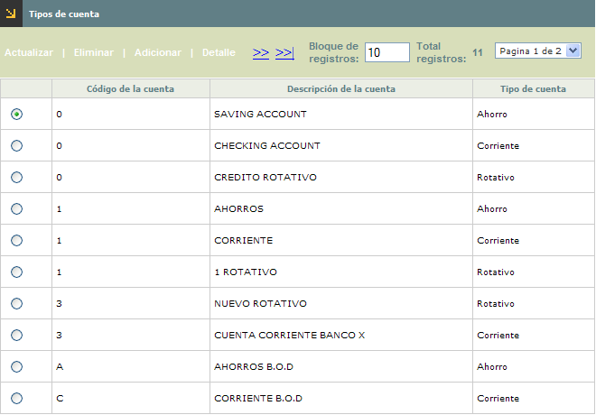
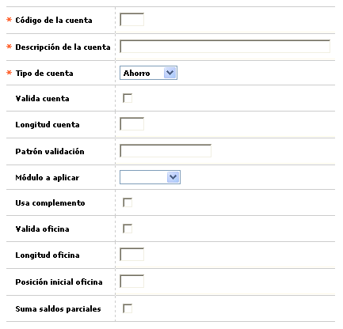
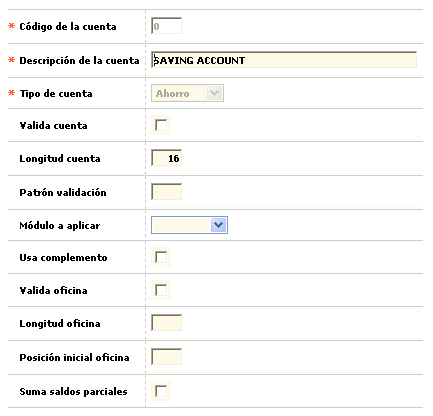
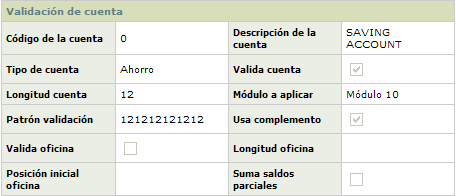

Tipos de cuenta |
Mediante este formulario el cliente podrá asignar los diferentes tipos de cuenta habilitados por cada producto. Registra un conjunto de parámetros misceláneos necesarios para los diferentes procesos del sistema. Esta facilidad se crea para evitar seguir modificando estructural y funcionalmente los Parámetros Operativos cada vez que uno nuevo es requerido
El formulario contiene las opciones Actualizar, Eliminar, Adicionar y Detalle.

Adicionar: Si el usuario invoca la opción Adicionar se despliega un formulario con los siguientes campos:

Código de la cuenta |
Campo obligatorio alfanumérico de dos caracteres, en el cual se digita el código para asignar a la nueva cuenta. |
Descripción de la cuenta |
Campo obligatorio alfanumérico de 30 caracteres, en el cual se realiza una descripción abreviada de la cuenta. |
Tipo de cuenta |
Campo que posee lista de valores adjunta de la cual puede seleccionarse entre Ahorro, Rotativo o Corriente, la clase o tipo de cuenta a afectar con los beneficios de los acuerdos celebrados con la entidad relacionada con el grupo de afinidad. |
Valida cuenta |
Campo para señalar si el sistema debe o no realizar validaciones sobre la cuenta. |
Longitud cuenta |
En este campo numérico de 2 dígitos, se registra la longitud máxima del número de la cuenta de ahorro, rotativo o corriente. Es obligatorio si el campo Valida Cuenta está activado. |
Patrón validación |
Campo obligatorio alfanumérico de 16 dígitos, en el que se registra la cadena de números con la cual se hace el cálculo del dígito de chequeo de la cuenta de ahorro, rotativo o corriente. Es obligatorio si el campo Valida Cuenta está activado. |
Módulo a aplicar |
En este campo que posee lista de valores adjunta se puede seleccionar el módulo que debe aplicarse al resultado para obtener el dígito de chequeo. Normalmente corresponde al Módulo 10 ó el Módulo 11. Es obligatorio si el campo Valida Cuenta está activado. |
Usa complemento |
Campo en el que la entidad determina si utiliza o no, éste parámetro, el cual le indica al sistema si al aplicar el Módulo, se utiliza como resultado el complemento de la operación aritmética. |
Valida oficina |
En este campo la entidad señala si dentro del número de cuenta de ahorro, rotativo o corriente está codificada la oficina, y si la entidad requiere que se valide el código de la misma, como parte de la integridad de información. |
Longitud oficina |
En este campo numérico de 1 dígito, se registra la longitud o cantidad de dígitos del código de oficina, que debe ser tomado a partir de la posición inicial, definido en el parámetro anterior. |
Posición inicial oficina |
Campo numérico de 2 dígitos, no obligatorio, que debe ser diligenciado en caso que sí se valide código de oficina. Este parámetro le indica al sistema, a partir de cual posición se toma el string correspondiente al código de oficina. |
Suma saldos parciales |
Campo en el cual la entidad señala si utiliza o no éste parámetro; aplica cuando se está calculando el dígito de chequeo, si al multiplicar cada dígito por el patrón establecido su resultado es un número mayor a 10, se deben sumar las dos componentes obteniendo siempre un número entre 0 y 9. Por ejemplo, si multiplica los números 2 y 7 el resultado es 14, luego si aplica el parámetro, se deben sumar los números 1 y 4 con lo que se obtendría el número 5. |
Actualizar: Si el usuario invoca la opción Actualizar se despliega un nuevo formulario en cual los únicos campos modificables son: Descripción de la cuenta, Valida cuenta, Longitud cuenta, Patrón validación, Módulo a aplicar, Usa complemento, Valida oficina, Longitud oficina, Posición inicial oficina, y Suma saldos parciales.

Detalle: Si el usuario invoca
la opción Detalle se despliega el siguiente formulario.

>